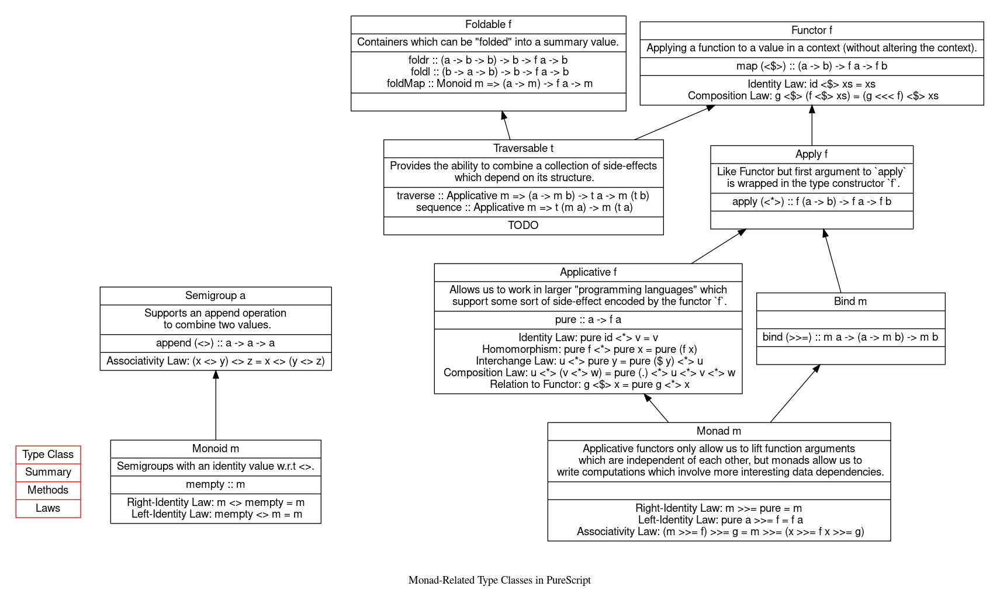

It’s useful to compare three related abstractions of computation provided by PureScript and Haskell.
.
The idea of composition is essential in functional programming. Composition is THE way we build large programs from small. At the most basic level we have function composition. But Functor, Applicative and Monad go further, while sharing the same powerful core idea of composition (or combining things), they work on computations with context.
Function Composition
Plain function composition in Haskell is straightforward:
> ((2*) . (1+)) 42
86Functor
Functor introduces the notion of context. What does that even mean? Values in a context means values are somewhat amplified. For example instead of Int values, a Functor can be Maybe Int, which amplifies the Int type with the possibility of a Nothing value:
> :t (<$>)
(<$>) :: Functor f => (a -> b) -> f a -> f b
> (2*) <$> (1+) <$> (Just 42)
Just 86
> (2*) <$> (1+) <$> Nothing
NothingOr list of Ints, which allows multiple or zero values:
> (2*) <$> (1+) <$> [42, 43]
[86, 88]
> (2*) <$> (1+) <$> []
[]Or even IO, which is also a Functor allowing IO side-effects:
> (++" is good") <$> (++"urity") <$> getLine
p<ENTER>
"purity is good"<$>, defined as an infixl, is an alias of fmap in Haskell and map in PureScript.
A function is also a Functor and <$> in that case is just function composition. In f <$> g, instead of providing a value to f, g provides another function in front of f! That’s why the first <$>s work in the above expressions.
Intuitively <$> can be described as “lifting” a “plain” function into a context so it can work on the value in that context. This is more obvious with the second <$>s above. More interestingly, note that <$> can make certain decisions - if you look at the implementation of the Maybe functor you’ll discover that when the value is Nothing, <$> doesn’t use its left argument (the function) at all. In other words, it can make decisions according to the context. This is an important point we’ll see again later.
Applicative
<$> is all very well but sometimes not only the value can be in a context, but also the function. What can we do with a Just (1+) and a Just 42? You may think that this is a contrived example but it naturally occurs when working with functions with multiple arguments:
> (+) <$> (Just 1)What we get from this is effectively Just (1+) but ghci doesn’t know how to print it. Now we simply have some functions in the context of Maybe!
Applicative comes to rescue with <*>:
> :t (<*>)
(<*>) :: Applicative f => f (a -> b) -> f a -> f b
> (+) <$> (Just 1) <*> (Just 2)
Just 3Given n > 1, when we use <$> to apply function of arity n to a value in a context, due to currying, what we get is a function of arity n - 1 in the context. It can be seen from the type of <$>.
(<$>) :: Functor f => (a -> b) -> f a -> f bby replacing type variable b with a function type.
(<$>) :: Functor f => (a -> b -> c) -> f a -> f (b -> c)The return value f (b -> c) is clearly a function in the context, and that fits the argument type of <*>.
Together, <$> and <*> chain a “plain” function and multiple values in context. The values here may very well be some other sort of computations.
> (\x y z -> x + y - z) <$> (Just 1) <*> (Just 2) <*> (Just 3)
Just 0Beside using <$> to create functions in a context, pure provided by Applicative also lifts a “plain” function into a context.
> pure (\x y z -> x + y - z) <*> (Just 1) <*> (Just 2) <*> (Just 3)
Just 0Here I’d like to highlight again that just like <$>, <*> may also make decisions based on context.
> pure (\x y z -> x + y - z) <*> (Just 1) <*> Nothing <*> (Just 3)
NothingMonad
So far we’ve seen:
- Chaining functions together (function composition).
- Lifting a function so that it works with values in a context (
<$>and<*>).<$>and<*>may make decisions based on context.
This
f :: a -> b -> c -> d
x :: m a
y :: m b
z :: m c
f <$> x <*> y <*> zalmost feels like a software framework where you fill in your business logic f and data x, y and z, then the framework executes f for you with certain control flow logic embedded in itself. If we get to define <$> and <*>, that is, design the Functor and Applicative instances ourselves, we get to control the flow as well!
It’s a useful intuition but we’re limiting ourselves by thinking this way. It’s more general than this - x, y and z may not be just data sitting passively waiting to be consumed. For example, they may resemble computations that run validation and yield Maybe values.
This is really powerful. But note that
fhas no way to affect the context (just look at its type). Hence it can’t in any way affect how<$>and<*>do their jobs.- While
x,yandzcompute values in a context (hence possibly affecting the control flow), they are isolated from each other.
Now, >>= from Monad gives everything:
> :t (>>=)
(>>=) :: Monad m => m a -> (a -> m b) -> m bIn contrast to f <$> x <*> y <*> z, consider
m >>= x >>= y >>= zWhen x, y and z are lambdas (e.g., when we employ the do-notation), it’s really1:
m >>= (\a1 -> o >>= (\a2 -> p >>= (\a3 -> q)))Just like <$> and <*>, >>= may still make decisions based on context. However:
mcarries the context so it can affect how>>=makes the decision.- The computations inside
x,yandzcan now access the values from previous computations. For examplepcan seea1anda2, so whenpaffect>>=, it could be based on previous computations.
When
x,yandzare not lambdas it’s(((m >>= x) >>= y) >>= z)therefore doesn’t demonstrate the point.↩